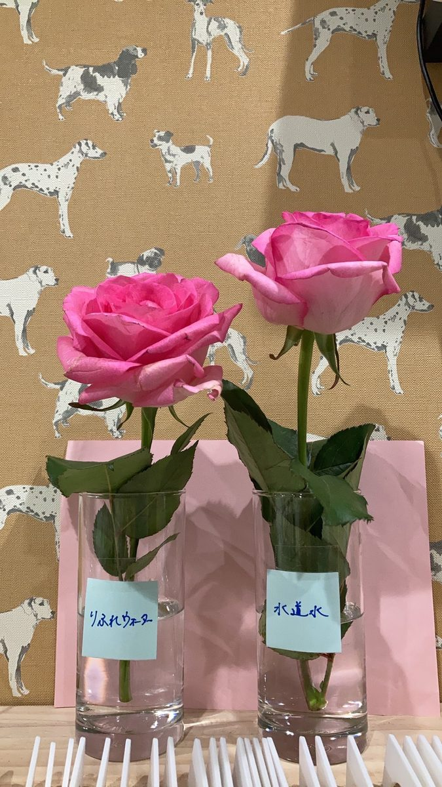
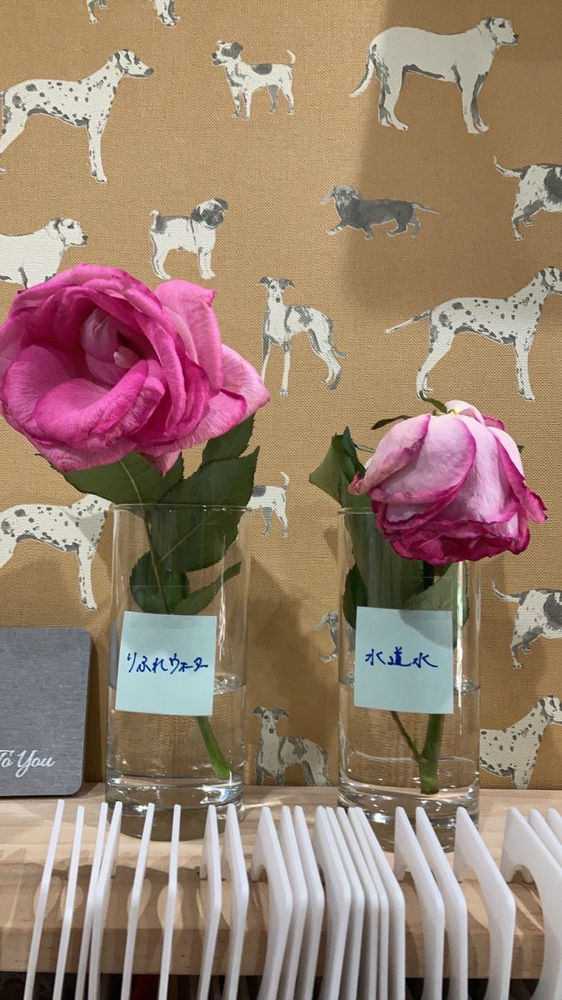

01
花瓶の水に ― バラ
左の花瓶に「りふれウォーター」、右の花瓶に「水道水」を入れて、同じ日に生けたバラの写真です。


花瓶の水や、植物の水やりに。
切り花を生ける花瓶の水として。
鉢植え・プランターに与える水として。
バケツ稲など、ご家庭で育てる植物の水として。
左の花瓶に「りふれウォーター」、右の花瓶に「水道水」を入れて、同じ日に生けたバラの写真です。


花瓶の水にりふれウォーターを使用した実際の写真です。


たった一晩でぴーん。
花瓶の水に使った方
同じ土で、水道水と濃縮りふれを使い分けて育てた植物の写真です。


実験しました。土も同じなのに、茎の太さと花の勢いも違うよ。これには驚きです。お花はここ1ヶ月で、ググッとこの成長を遂げました!
鉢植えで試した方


育ちが早い!
バケツ稲を育てた方
※お客様の声は個人の感想です。